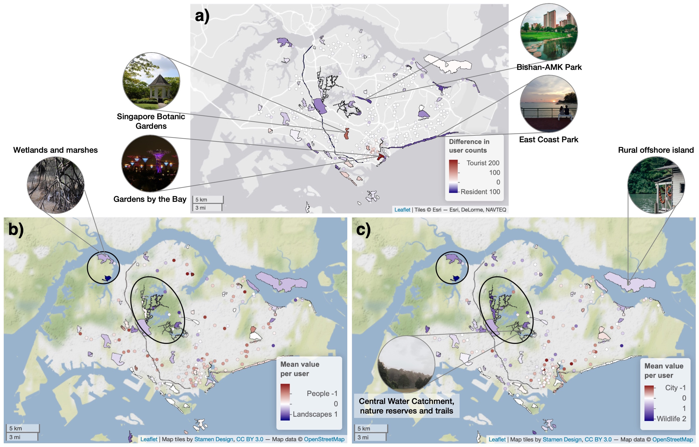
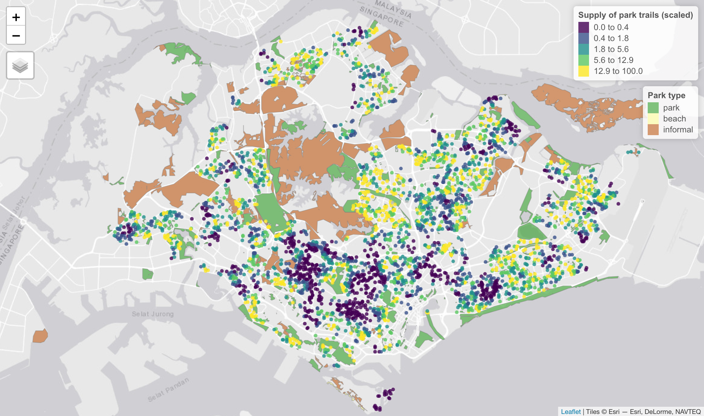

Outdoor Recreation in Cities
The supply and demand for different types of urban parks
 Image by Pexels from Pixabay
Image by Pexels from Pixabay
Parks and green spaces are important places for outdoor recreation in cities. They also provide opportunities for city dwellers to experience nature, and contribute to health and well-being in numerous ways.
People’s experiences of their surroundings can vary depending on where they are and their personal interests. Today, the internet and geo-located social media have opened up new ways for us to understand these differences. Technologies to interpret text and image content have also been improving, which can be used to assess the effects of the environment on people’s behaviour, sentiment and aesthetic experiences at specific places. Many studies have used geo-located social media as a proxy for outdoor recreation, but such data are often generated bottom-up, making it challenging to ensure that all people groups are properly represented.

Variation across parks in Singapore according to the kinds of social media users they attract. User groups were based on (a) residency status, as well as the relative amounts of (b) Landscapes–People and (c) Wildlife–City content within favourited photographs. Figure from Song et al. (2020).
There is also a need to ensure that people have access to a variety of parks from their homes. This requires effective ways to measure the spatial provision of parks, alongside the expected demand for park use. Ongoing work seeks to integrate these techniques with park planning and design.

Supply of foot/cycle trails to residential buildings in Singapore
Opportunities
We offer projects for motivated students interested in this topic, depending on availability per semester. Prospective students may contact me via email.